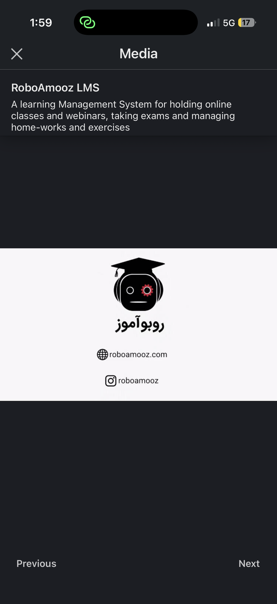
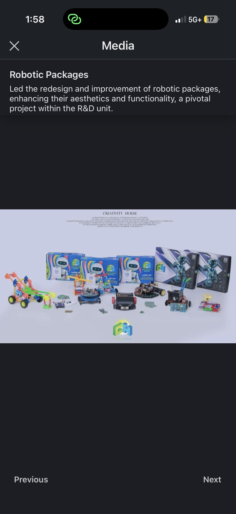
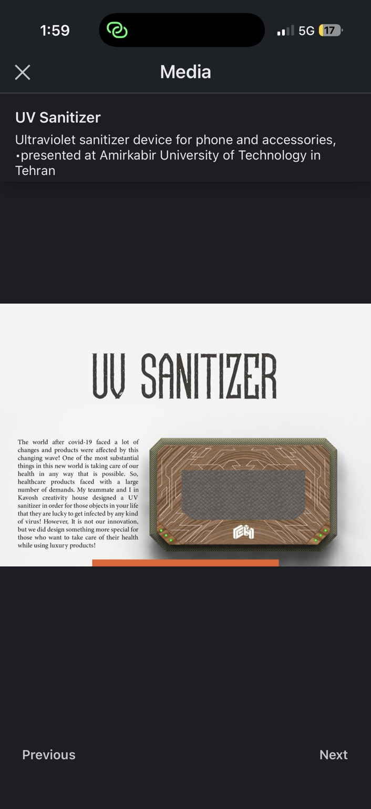
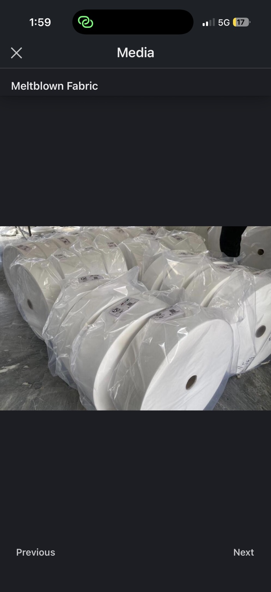

I turn complex projects into working programs, teams, and systems. We’ve built Kavosh across Canada. I’ve coached Team Canada robotics students and helped deliver international competitions. I bring technical understanding, AI automation, and the follow-through to turn ambitious plans into results.
One of the teams we coach at Kavosh, part of a community of more than 400 students across Canada.
From the classroom to competition.
We work with schools to bring robotics into the classroom. Our coaches help students design, build, and test their robots, and we work with families to get each team ready for competition. We build the curriculum and coordinate the program together.
I’m building Sibby, an AI office for businesses. We use it at Kavosh to manage bookings, email, and finance. It prepares the next action for someone on the team to review.
I was part of the BeaverIO team behind BeaverPod. Children can ask questions out loud, and parents and teachers can set the learning boundaries through a dashboard.
Earlier engineering projects, products I’ve contributed to, and the work behind them.
Education technology
RoboAmooz LMS
During the pandemic, I helped build RoboAmooz, a learning management system for online classes, webinars, exams, homework, and exercises. I demonstrated it to schools, configured it around their needs, and onboarded users. The service later closed.

Product design
Robotics packages
At Kavosh Creativity House, I led the design and improvement of robotics packages within the R&D team. I worked on their appearance and functionality, bringing the robots and their packaging together as a product.

Hardware design
UV sanitizer
With a teammate at Kavosh Creativity House, I worked on the design of a UV sanitizing device for phones and accessories. We presented the project at Amirkabir University of Technology.

Product management
Kavoshbaft
I worked with development teams to align product features with technical capabilities. My responsibilities included gathering feedback for improvements, coordinating product updates across teams, and helping resolve technical issues during development.

Biomedical robotics R&D
Pishdas · Invenio
I worked with the Pishdas team on the Invenio vaccine-injection robot, contributing PCB design, reviewing CAD, and writing code during prototyping.
Concept illustration · not the actual Invenio device
Consulting
Websites and AI automation
I help small businesses turn an operational need into a website or a working automation. I scope the work with the owner, coordinate specialists, and follow up through delivery.
Concept illustration · business systems and automation
EXPERIENCE & TOOLS
Technical background.
Earlier roles
2016–2019
C/Python developer and PCB designer, Kavosh Robotics Team
2019–2020
R&D lead, Kavosh Creativity House
Product management
Kavoshbaft
2022–2023
Technology instruction, Beeta International Education
2023–2024
Co-founder and director, X International Education
On the bench
Designing robot kits and PCBs, reading schematics, reviewing CAD, assembling and testing electronics, and debugging with multimeters and oscilloscopes. On the software side I’ve worked with C/C++, Python, Linux, OpenCV, and YOLO.
In operations
I scope projects with partners, set schedules, and coordinate the people delivering the work. At Kavosh that includes mapping the steps from school outreach to onboarding, training coaches, and following up after launch.
Operations & collaboration
Google WorkspaceDrive · Docs · Sheets · Gmail
Microsoft 365Excel · Word · PowerPoint
SlackTeam communication
JiraProject & task tracking
HubSpotCRM & follow-ups
QuickBooksBusiness accounting
SquarePayments & invoicing
ScrumAgile project delivery
API integrationConnecting business tools
MCPModel Context Protocol
Development & robotics
ReactComponent-based interfaces
Frontend developmentWeb pages and user interactions
Backend developmentApplication logic and APIs
DatabasesStoring and retrieving records
PythonProgramming & automation
C / C++Robotics & embedded code
LinuxTechnical environments
OpenCVComputer vision
YOLOObject detection
PCB designCircuits & electronics
CAD reviewMechanical design review
Claude CodeAI-assisted development
CONTACT
Let’s work together.
If you’re introducing a new tool or expanding a partner program, I can map the work with your team, coordinate the rollout, and train the people who will use it every day.
Bachelor’s in Biomedical Engineering Amirkabir University of Technology · 2019–2022